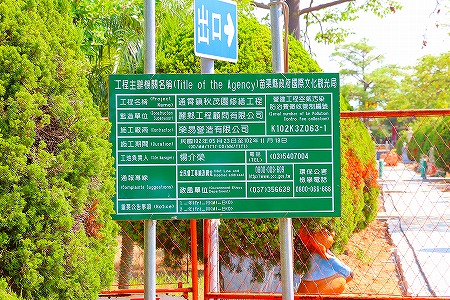

秋茂園2/苗栗県
秋茂園2/苗栗県
個性的なコンクリ像がズラリと並ぶ秋茂園。
その様子はまさに台湾版タイガーバームガーデン！

改修工事で一部入れなかったが、その高いポテンシャルを感じるには充分であった。
あまりの特濃空間具合に早くもグロッキー状態に陥ってしまったが、気力を振り絞って後半戦スタート！
秋茂園は大体こんな感じになっている。
前半お伝えしたのは正門から入って右サイドの部分にある観音堂と観音塚。
…まだほんの一部しかお伝えしていないのですよ…
観音堂と観音塚の間にはもうひとつ建物がある。
入り口に立っていらっしゃるのは…
お坊さんと
神父さん…なのか？
土に半分埋もれた牛。
赤い着物のお嬢さんがお出迎え。
偶々参拝に来たオジサンとその娘に話しかけられるも、スミマセン言葉がワカリマセン。
どうやら工事中であっちは入れないよ的な事と「拝拝」の事について話しているようだった。
つまりここは道教の建物なんだよ、ということを伝えたかったみたい。
鬼がですね、腕が剥がれちゃって中身の鉄筋が飛び出しちゃってるわけですよ！
赤鬼のほうは両手に何かを持っていたようだが今はその得物すらどこへやら。
おまけに握り締めた拳すらヒビが入っちゃっているし。
壁に描かれていた衆生を救う船。
このイラスト好きだなー。
秋茂園の北東の角には秋茂堂という建物がある。佛光の文字が眩しい。
庇の上の鶴もコンクリで作られていた。
足の辺りが結構悲しいことに…。
鳥のイラストが描かれており、鶴の彫像があるのと窓に鉄格子が入っているので鳥小屋なのかと思ったら、阿弥陀サマや観音サマ、地蔵サマなどの仏像が並んでいた。
扉が閉まっていて入れなかったが、中はこんな感じ。
再び正門方面に戻ろう。
ここまでは秋茂園の北側を見てきたが、これから正門から海に向かうエリアを見ていく。
正門近くにある西遊記のコンクリ像。
巨大な亀の背中には飲水思源の文字が。
裏には「祝 台湾海峡水清浪静」とあった。
そしてこの秋茂園屈指の大きな構造物である地球儀。
北半球だけで地球上の大陸を表現しきってしまおうという圧縮された世界観がたまらない。
南半球にあるはずのオーストラリアとかニューギニアやインドネシアもキッチリ北半球に組み込まれてます。
地球の上には母を背負った黄先生の姿が。
半球の地球の中には黄先生の詩碑が掲げられていた。
上段が中国語、下段が日本語。同じ内容の詩が刻まれている。
碑文によると黄秋茂氏は日本に留学した哲学博士だとか。
居住していたのは和歌山の白浜温泉。他の碑文には在大阪ともあった。
白浜温泉の白浜温泉民俗資料館には黄秋茂氏が寄贈した純金の円月島があるとの事。
以前資料館に行った際の写真を調べてみると純金の円月島は展示されてなかったが、同じく氏の寄贈による故宮博物館にある七馬を金と銀で複製したものが展示されていた。
なお、故荒川聡子さんの調査によると白浜の歓喜神社の狛犬も黄秋茂氏の寄贈だとか。
かように日本と縁の深い黄氏。入り口の金太郎や桃太郎がいるのもうなずけよう。
地球儀の裏にまわるとバーベキュー場（拷肉区）になっている。
コンクリ像を見ているだけでお腹一杯になりそうな秋茂園でバーべキューするという胆力も凄いが、海も近いしまあ、悪くないロケーションかもですねー。
とはいえところどころ仏様や神様が点在しているので油断はならない。
バーベキュー場を抜けるとそこは海。門の柱には開場時間が何度も上書きされていて全然読めないんですけど。
異様なまでに遠浅の海。
浜に唯一いた売り子のお婆さんからコーラを買い、わずかばかりの水分補給をしつつ海に面したテラスで休憩。
ちなみにお婆さんはコーラと一緒にクーラーボックスに入っていた生貝を食え食えと勧めてきた。
いくらクーラーボックスの中とはいえ炎天下に放置された生貝を食うほどあたしゃガッツないんで遠慮しときました。
わずかながらの水分を補給したことで元気倍増！
さあ、秋茂園探索再開だあ！
再びバーバキュー場を横断し、工事中のエリアに近づく。
工事中のエリアには入れないようだが、周囲にもまだ素敵な東屋など見るべき場所は多い。
この東屋、周辺が石を敷き詰めた健康歩道になっている。
裸足でこの敷石の上を歩くとツボが刺激されまくり、というか痛くて歩けないくらい刺激的な歩道なのだ。
屋上の屋根の上もまた香ばしい。
翼の折れてないエンジェルですよ。エンジェル。
工事中のエリアは策で覆われて中の様子も窺い知ることすら困難だ。
しばし金網越しにその雄姿を眺めようではないか。
ちなみに工事は件の観光局が行っている。つまり公金。
中華風の寓話のいちシーンが展開している。
この秋茂園最大の構造物。牛。
塗装がところどころ剥離してはいるが、それはそれでいい味をだしている。
巨牛の隣には三人の兵隊さんが国旗を掲げている。
この三体だけは妙に出来が良かったような気がする。
タマキンを後ろから眺める石像…って何だこれ？
工事をしている人に許可を貰って柵の中に入れてもらった。ありがたや。
折角なのでたっぷり拝見させていただきますよ。
工事しているのは目下歩道の敷石だけで肝心のコンクリ像の補修は行われていない。
というかあちこち壊されちゃってるんですけど。
辛うじて残っている部分もあるにはあるけど…
そんな中、異彩を放っていたのがこちら。
第二の地球儀である。
先ほどの地球儀が母を背負う孝行息子という感動的なシーンだったが、今度は銃を手にした軍装の男女像。
国民党軍なのかな。
お、ココにも天使がいた。
工事中のエリアには辛うじて生き残っているコンクリ像もあった。
今後消えてなくなってしまう可能性もあるのでここにお伝えしておく。
カウボーイ。
駱駝。
観音菩薩、交通事故に遭う。無残！
屋根の抜けた東屋。これも壊されてしまうのだろうか。
立ち入り禁止のテープは交通整理員（のコンクリ像）の手に巻きつけてあった。
神仏あり、軍人から西遊記、カウボーイあり、と雑多な印象だが、きっと黄先生の脳内にある楽園をきっちりトレースしているはず。
しかしその真意は誰にもわからない。この楽園の創造主である黄先生だけが知っているのだ。
改修が終わったらこのうらぶれたコンクリ庭園はどんな姿に変貌するのだろうか。
どう考えても今より魅力的になるとは思えないのだが。
そういう意味では欠損箇所は多かったが、この状態の秋茂園を目に焼き付けることができて良かったよ。ホントに。
情報提供はとうりょさんです。ありがとうございました。